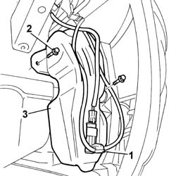

5050A10 windscreen washer fluid reservoir (in engine bay) - r+r
- Path
- Procedures > 50 AUXILIARY UNITS > 5050 SCREEN WASHERS AND HEADLAMP WASH/WIPE > 5050A windscreen and headlamp washer reservoir > 5050A10 windscreen washer fluid reservoir (in engine bay) - r+r
- Kind
- repair procedure (removal / refitting; the operation number is the code)
- Applies to
- all engines; all production periods
- Interactive page
- https://sloeber94.github.io/elrnDB-fPnd/en/#/2752910
Applies to: all engines; all production periods
 Removing
Removing
 Refitting
RefittingPlace the car on a lift.
7055B91 Right front WHEEL ARCH LINER - R.R.
1. Undo the windscreen/rear window washer pipes from the attachments on the reservoir and remove the windscreen/rear washer pump and move it aside.
Collect the fluid in a suitable container.
2. Undo the retaining bolts.
3. Remove the windscreen/rear window fluid reservoir.

Applies to: all engines; all production periods
Refitting
RemovingFit the windscreen/rear window fluid reservoir and tighten the fixing bolts.
Fit the windscreen/rear window pump in its seating and secure the tubes to the reservoir.
7055B91 Right front WHEEL ARCH LINER - R.R.
Remove the vehicle from the lift.
Top up the fluid in the windscreen washer reservoir.